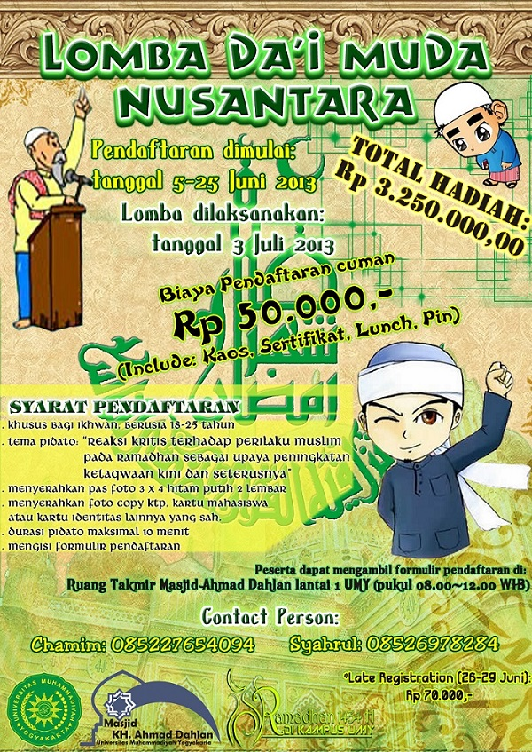

Lomba Dai Muda Nusantara

Masjid Al Ukhuwwah mengadakan lomba dakwah dengan tema "wanita surga" dalam rangka hari kartini. Peserta adalah para siswa dan siswi SMP (Sekolah Menengah Pertama) yang berada di kota bandung yang berusia 7-10 tahun.
Para peserta harus menyiapkan segera isi dakwah sesuai tema lomba karena TOTAL HADIAH JUTAAN RUPIAH menanti! Buktikan bahwa generasi muda berbakat dan bertalenta dalam berdakwah.
HADIAH LOMBA
Juara I : Rp.1.000.000,00 (satu juta)
Juara II : Rp.500.000,00 (lima ratus ribu)
Juara III : Rp.250.000,00 (dua ratus lima puluh ribu)
KETENTUAN LOMBA
Peserta mendaftarkan diri sebelum hari lomba dimulai dengan biaya administrasi sebesar Rp.50.000. Dakwah akan dinilai oleh juri, dan keputusan dari juri tidak dapat diganggu gugat.
JADWAL
| Hari |
: |
Rabu |
| Tanggal |
: |
16 April 2014 |
| Jam |
: |
09.00 - 12.00 |
| Tempat |
: |
Masjid Al Ukhuwwah |